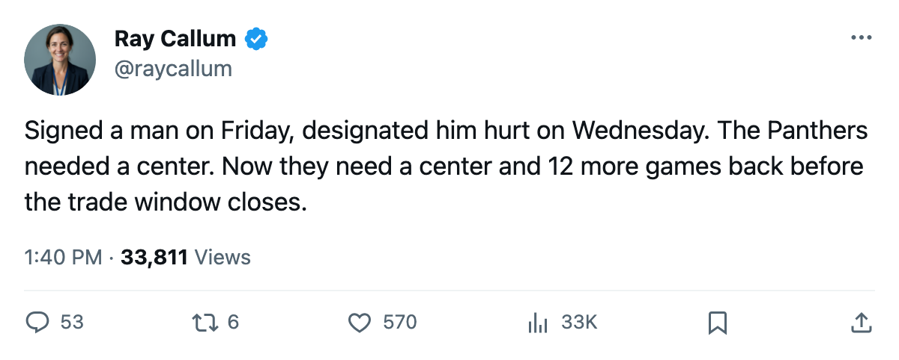

Injury Report: Florida loses Nieuwendyk (groin) days after signing; return targeted for March 19
The Panthers' new center is out for their last 13 games before what the calendar has as the trade deadline
 Ray CallumSenior correspondent · Home Ice Network
Ray CallumSenior correspondent · Home Ice Network
 Florida Panthers signed
Florida Panthers signed  Joe Nieuwendyk82 on February 25. The contract carried $108,240. The league designated a groin injury with an onset sometime between February 28 and March 2, and a return date of March 19.
Joe Nieuwendyk82 on February 25. The contract carried $108,240. The league designated a groin injury with an onset sometime between February 28 and March 2, and a return date of March 19.
That is 17 days from signing to confirmation, and roughly 12 games of the final 18 he will not play. Nieuwendyk carries an 81 overall grade and arrived at a club sitting 13th in the East with 61 points through 64 games.
This is his 5th injury designation this season. The previous 4 carry no named body part and predate his Florida contract.
A club drowning in designations
Florida's injury ledger this season lists 40 spells and 158 days lost. That puts them 5th in the league in spells, ahead of clubs with deeper rosters to rotate through.
| Club | Spells | Days lost | Currently out |
|---|---|---|---|
| TB | 44 | 575 | 5 |
| PIT | 45 | 553 | 7 |
| DET | 41 | 353 | 5 |
| VAN | 45 | 341 | 2 |
| FLA | 40 | 158 | 1 |
Florida has only 1 man currently on the list, the result of a stretch between late January and late February when the designations cooled. Nieuwendyk's groin is the first new one since the trade window opened.
The Panthers face  Toronto Maple Leafs on March 3, a team that has beaten them 3 times this season without a loss. Florida is 0-3-0 in that series, outscored 11-5.
Toronto Maple Leafs on March 3, a team that has beaten them 3 times this season without a loss. Florida is 0-3-0 in that series, outscored 11-5.
With Nieuwendyk out, Florida's center depth thins right before the trade deadline, 17 days away. Florida sits 5 points behind the 8th-place  New York Islanders.
New York Islanders.
